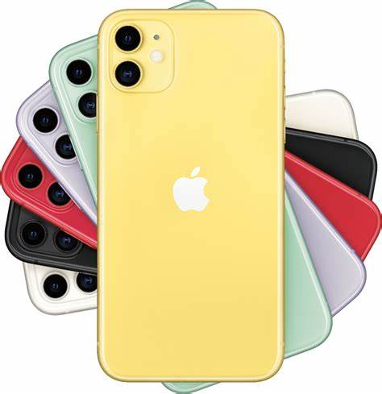

Mobile marketing is any advertising activity that promotes products and services via mobile devices, such as tablets and smartphones. It makes use of features of modern mobile technology, including location services, to tailor marketing campaigns based on an individual's location. Mobile marketing is a way in which technology can be used to create personalized promotion of goods or services to a user who is constantly connected to a network. KEY TAKEAWAYS Mobile marketing is an advertising activity that uses mobile devices, such as text promos and apps via push notifications. Mobile marketing audiences are grouped by behaviors and not by demographics. Mobile marketing is a subset of mobile advertising. Marketing faces privacy issues related to data collection. Mobile marketing is much more affordable than traditional marketing on television and radio.
